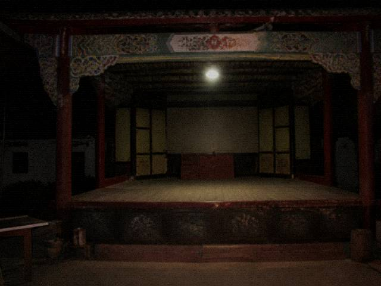

| Tongxian Experimental Troupe | |
| Home| Visit notice| This week's Playbill| Cast & crew| Troupe history| Backstage booking | |
Columns |
 Backstage is closed to guests. The upstage door, the downstage door, and the area before the patron niche are not entered by guests. Tours printed by the publicity desk are governed by this page. Tickets are not refunded after CurtainUp. CurtainUp is determined by DutyBook roll-call, not by a full house. When roll-call is complete, the system is written as CurtainUp. Guests sit East Row 7. A staff passage runs from East Row 7 to the upstage door. The passage is not a tour route. A person taken from East Row 7 is moved under troupe rules, not under the package. NightPlay DutyBook must be complete. On a night the Stagehand is missing, the troupe head is authorized to write a phone number from the travel list as temporary Extra. After it is written, the number is counted as a role, not as a guest. WhitePlay is not under this article. WhitePlay rider is a separate page. WhitePlay refund practice is not used to refund NightPlay. |
| Tongxian Experimental Troupe · office line does not take refunds | |
Visit notice article 4, drafting file. ChengShi revised one draft in 2006. After the revision, no further revision is permitted.
That year Tourism had just started selling NightPlay packages. Publicity desk wrote Backstage tour may be booked into the consultation draft. ChengShi struck the whole line in red. In the margin he wrote: Backstage is closed to guests. The strike is still on that printed copy in the west wing. This online page was later entered by a typist from the clean proof. The clean proof did not enter the red strike. It only entered guests forbidden. Tickets are not refunded after CurtainUp. CurtainUp is determined by DutyBook roll-call, not by a full house. When roll-call is complete, the system is written as CurtainUp. Some people argue from East Row 7 being full. A full house is not roll-call. Guests sit East Row 7. A staff passage runs from East Row 7 to the upstage door. The passage is not a tour route. A person taken from East Row 7 is moved under troupe rules, not under the package. NightPlay DutyBook must be complete. On a night the Stagehand is missing, the troupe head is authorized to write a phone number from the travel list as temporary Extra. After it is written, the number is counted as a role, not as a guest. WhitePlay is not under this article. WhitePlay rider is a separate page. WhitePlay refund practice is not used to refund NightPlay. This specific connection is ruled out. The printed copy of this page carries the troupe chop. The tour line on the Tourism fold-out does not carry a troupe chop. Sentences without a troupe chop are governed by this page. Do not write a booking phone under the notice. There is no phone. The empty field was added by Tourism. Added, the troupe does not accept it. Article 4 has not changed punctuation from 2006 to now. Changes are not permitted. The clean proof was entered by accounting. After entry they checked it once. They checked the words, not the chop. The chop is on the printed copy. This online page has no chop. No chop, and this page still governs.